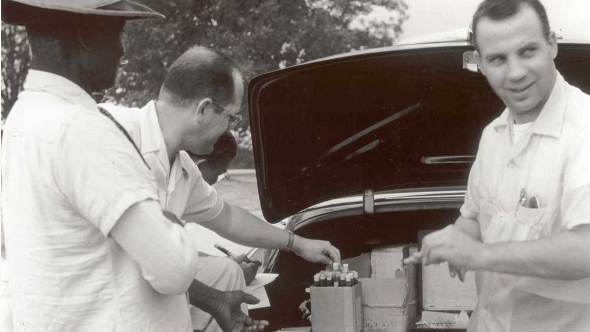
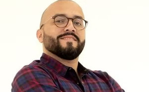
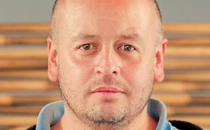
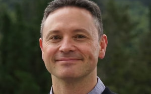
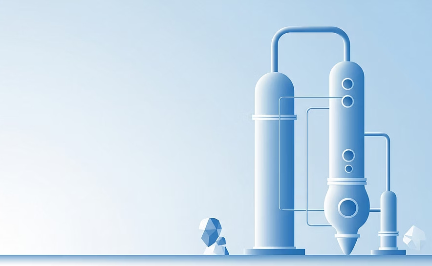
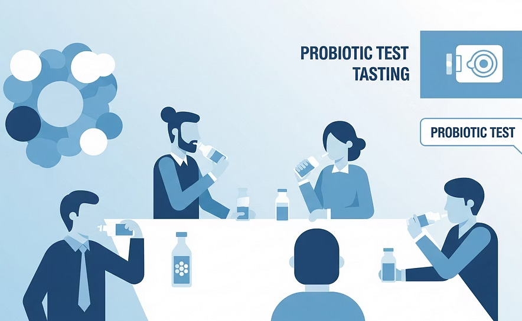
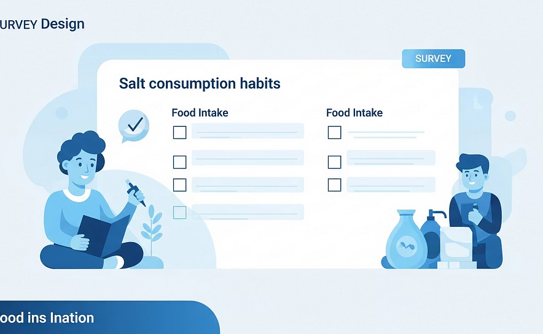
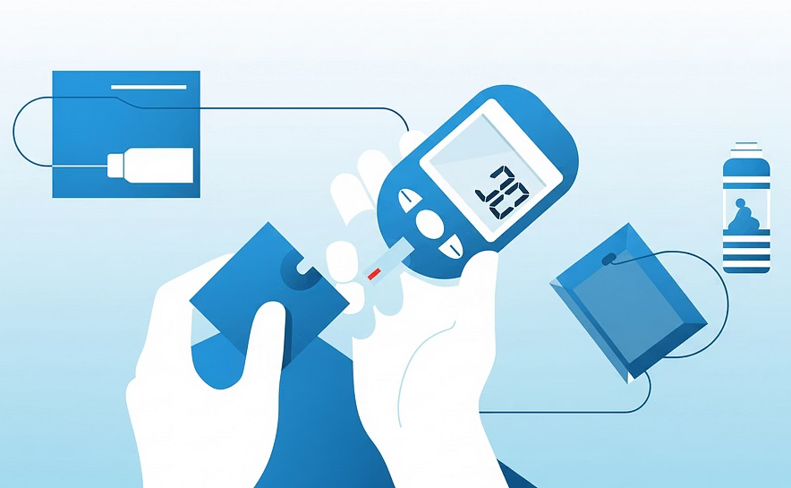
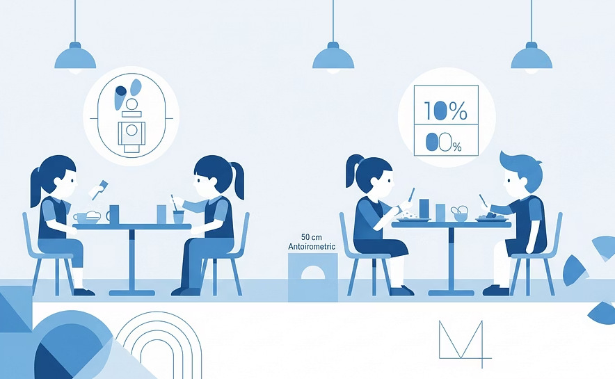

IQYA 3050 · Sesión 6 · 6 may 2026
Ética en investigación
Seminario de Proyecto de Desarrollo Profesional · by Luis H. Reyes
Principios
Nivel de riesgo
Aval ético
IQYA 3050 · Sesión 6 · 6 may 2026
Seminario de Proyecto de Desarrollo Profesional · by Luis H. Reyes
Hoy
Motivación
Casos históricos que cambiaron todo

Uno de los episodios más oscuros de la investigación médica estadounidense. 600 hombres afroamericanos de Alabama fueron estudiados sin recibir tratamiento para la sífilis. Les dijeron que recibían atención médica gratuita, cuando en realidad eran observados para documentar la progresión natural de la enfermedad. El estudio continuó incluso después de que la penicilina estuvo disponible como cura en 1947.
Este caso llevó a la creación del Informe Belmont en 1979, que estableció los tres principios fundamentales de la ética en investigación que utilizamos hoy en día.
Marco fundacional
Autonomía: las personas tienen derecho a decidir libremente si participan en una investigación.
Protección especial: grupos vulnerables requieren salvaguardas adicionales para garantizar su protección.
Maximizar beneficios: buscar el mayor bien posible para los participantes y la sociedad.
Minimizar daños: no maleficencia, siguiendo el principio hipocrático de "primero, no hacer daño".
Distribución equitativa: los beneficios y las cargas de la investigación deben distribuirse de manera justa.
No explotación: evitar aprovechar a grupos vulnerables o en desventaja.
Aplicación
En un proyecto típico de ingeniería química o de alimentos, es común realizar actividades que tienen implicaciones éticas directas. Estas son algunas situaciones frecuentes:
Evaluación de sabor, textura, aroma y apariencia de productos alimenticios.
Formulación y prueba de alimentos funcionales o fortificados.
Recopilación de información sobre preferencias y comportamientos de consumo.
Sangre, saliva u otros tejidos para análisis nutricional o biomarcadores.
Niños, adultos mayores, personas con enfermedades crónicas o condiciones especiales.
Registro de comportamiento, reacciones o interacciones con productos.
Normatividad
Esta resolución del Ministerio de Salud establece las normas científicas, técnicas y administrativas para la investigación en salud. Es aplicable a toda investigación que involucre seres humanos en Colombia.
Clasificación de riesgo según esta resolución:
Estudios que no involucran manipulación de variables en participantes.
Estudios con procedimientos comunes con riesgos predecibles y menores.
Investigaciones con procedimientos invasivos o riesgos significativos.
Institucional
Un comité satélite del Comité Central de Ética de la Universidad de los Andes, específicamente dedicado a evaluar proyectos de investigación en ingeniería.
Velar porque los proyectos cumplan con estándares éticos rigurosos, proteger a todos los sujetos involucrados, y revisar y otorgar avales para proyectos que lo requieran.
El comité fue establecido para fortalecer la cultura de investigación responsable en la Facultad de Ingeniería.
Comité de Ética de la Investigación de la Universidad de los Andes.
Equipo
Alicia Porras Holguín
Vicedecana de Investigación y Doctorados
María Camila Ussa
Coordinadora administrativa del comité
Profesores permanentes del comité:

Ingeniería Química y de Alimentos

Ingeniería Eléctrica y Electrónica

Ingeniería Biomédica
Ingeniería Química y de Alimentos
Pregunta crítica para ustedes
TODOS los proyectos deben tener una reflexión ética. Incluso si su proyecto se clasifica como "sin riesgo", debe reportarlo al comité para dejar constancia formal del proceso de evaluación ética.
✓ Aval del profesor o asesor principal del proyecto antes de enviar su solicitud al comité.
⚠ Muy importante
❌ No puede tomar datos primero y luego pedir el aval.
✓ Debe enviar la información ANTES de iniciar cualquier toma de datos.
¿Por qué esta política es tan estricta?
Garantiza que los derechos y el bienestar de los participantes estén salvaguardados desde el inicio.
Le respalda legalmente y académicamente ante cualquier situación imprevista.
Asegura que la investigación cumpla con estándares éticos internacionales desde su concepción.
Satisface requisitos establecidos por la legislación colombiana y regulaciones universitarias.
Asignación
La asignación del comité depende de varios factores que determinan el nivel de evaluación requerido:
¿Es estudiante de pregrado, posgrado o profesor?
¿Sin riesgo, riesgo mínimo, o mayor que el mínimo?
¿Hay financiación externa o fuentes de recursos especiales?
Dos comités posibles en Uniandes:
Evalúa la mayoría de proyectos de estudiantes de pregrado.
Casos específicos con mayor complejidad o financiación externa.
Estudiantes de pregrado
Sin importar el nivel de riesgo de su proyecto, como estudiante de pregrado siempre será evaluado por este comité.
Aplica para proyectos clasificados como:
Paso 1
Antes de solicitar el aval ético, debe determinar el nivel de riesgo de su proyecto. Este proceso de autoclasificación se basa en responder tres preguntas principales:
Determina si su investigación requiere participación de seres vivos.
Evalúa las consecuencias de resultados no esperados.
Identifica posibles sesgos o intereses secundarios.
Vamos a ver cada pregunta en detalle en las siguientes diapositivas.
Autoclasificación
→ Continúa a la pregunta 2 para seguir evaluando el nivel de riesgo.
Debe realizar una evaluación más detallada respondiendo aspectos específicos ↓
Evaluación adicional si trabaja con seres vivos:
¿Tiene potencial de afectar comunidades o ecosistemas? Si la respuesta es SÍ → Riesgo mayor al mínimo.
Si NO afecta comunidades/ecosistemas: debe responder las preguntas específicas 1.1 a 1.5 para determinar el nivel de riesgo con mayor precisión.
Autoclasificación · preguntas 1.1 a 1.5
¿Su investigación modifica, interviene o analiza una variable fisiológica, psicológica o social de los sujetos participantes?
¿Se realizarán procedimientos invasivos, quirúrgicos, ensayos con dispositivos nuevos o administración de medicamentos?
¿Involucra menores de edad, personas privadas de libertad, personas con discapacidades cognitivas o físicas, o poblaciones en situación de vulnerabilidad?
¿El estudio incluirá publicación de algún dato sensible que represente un riesgo adicional más allá de la generación de incomodidad leve?
Ejemplos: información médica, datos financieros, preferencias políticas o religiosas, orientación sexual, etc.
¿Se ofrecerá a los sujetos de investigación algún incentivo (monetario o en especie) para participar en el estudio?
Los incentivos pueden crear presión indebida para participar, especialmente en poblaciones vulnerables.
Evaluación
Si contestó SÍ a alguna de las preguntas 1.1 a 1.5, debe hacer una evaluación adicional de los riesgos que genera su investigación.
¿Son estos riesgos:
Según sesión del 12 de noviembre del 2025, los estudios involucrando poblaciones vulnerables serán remitidos al comité central de la universidad.
Determinación del nivel de riesgo:
Si responde SÍ a las tres condiciones (a, b, c):
→ Riesgo mínimo
Si responde NO a alguna de las condiciones:
→ Riesgo mayor al mínimo
Autoclasificación · pregunta 2
Esta pregunta evalúa las consecuencias si su investigación no logra los resultados esperados o si los datos no son concluyentes.
¿Si su investigación no logra los resultados esperados, considera que podría llegar a suceder alguno de estos escenarios?
Resultado de la evaluación:
Si responde SÍ:
→ Riesgo mínimo
Si responde NO:
→ Continúa a la pregunta 3 para completar la clasificación
Autoclasificación · pregunta 3
Condiciones en las cuales el juicio profesional sobre la integridad científica tiende a estar influenciado negativamente por un interés secundario, ya sea monetario o sentimental.
Ejemplos comunes de conflicto de interés:
Relación personal, familiar o de amistad cercana con los participantes del estudio.
Interés financiero directo en los resultados de la investigación o en su aplicación comercial.
Trabaja para una empresa que se beneficiaría directamente de los resultados (este va al comité central).
SÍ hay conflicto de interés:
→ Riesgo mínimo
NO hay conflicto + contestó NO a preguntas 1 y 2:
→ Sin riesgo
Resumen
Ejemplo: simulaciones computacionales, revisiones de literatura, análisis de bases de datos públicas.
Ejemplo: encuestas, pruebas sensoriales, entrevistas con consentimiento informado.
Ejemplo: estudios clínicos, investigación con poblaciones vulnerables, procedimientos médicos.
Ejemplos prácticos

Clasificación: Sin riesgo
Clasificación: Sin riesgo
Ejemplos prácticos

Clasificación: Riesgo mínimo

Clasificación: Riesgo mínimo
Ejemplos prácticos

Clasificación: Riesgo mayor al mínimo

Clasificación: Riesgo mayor al mínimo
Paso 2
Dependiendo de su clasificación de riesgo, necesitará preparar diferentes conjuntos de documentos. Asegúrese de tener todos los documentos completos antes de enviar su solicitud.
Consentimiento
Es un documento donde el participante acepta voluntariamente participar en su estudio después de entender completamente todos los aspectos de la investigación.
El participante debe comprender:
Descripción clara de los procedimientos, duración y frecuencia de participación.
Explicación honesta de todos los riesgos potenciales, incluso los mínimos.
Beneficios directos para el participante o para la sociedad en general.
Sin consecuencias negativas, penalización o pérdida de beneficios.
Plantillas
La página web del comité proporciona plantillas de consentimiento informado para diferentes tipos de estudios. Es importante usar la plantilla adecuada para su tipo de investigación:
Para estudios de opinión, percepción, experiencia vivida o comportamiento social. Incluye tanto cuestionarios escritos como entrevistas presenciales o virtuales.
Para estudios de interacción con tecnología, interfaces digitales, experiencias inmersivas o evaluación de usabilidad de sistemas.
Para estudios con dispositivos médicos, mediciones fisiológicas, monitoreo de signos vitales o pruebas de equipos biomédicos.
Para estudios de consumo, pruebas sensoriales, evaluación de aceptabilidad, análisis hedónico o desarrollo de productos alimenticios.
Menores de edad
Cuando trabaja con menores de edad (personas menores de 18 años en Colombia). Es un requisito legal y ético adicional al consentimiento de los padres.
¿Qué es diferente del consentimiento?
Paso 3
Usa los diagramas de decisión para determinar con precisión el nivel de riesgo: sin riesgo, riesgo mínimo o riesgo mayor al mínimo.
Completa el formulario correspondiente a su clasificación, redacta los consentimientos informados si aplican, y reúne todos los documentos requeridos.
Este es un requisito obligatorio antes de enviar al comité. Su asesor debe revisar y aprobar todos los documentos.
Completa y envía el formulario online correspondiente con toda la documentación adjunta. Recibirá confirmación de recepción.
Formularios
El comité tiene dos formularios online distintos según su clasificación de riesgo. Asegúrese de usar el formulario correcto:
Para proyectos que no involucran seres humanos o animales, no tienen riesgos por falta de resultados, y no presentan conflictos de interés.
→ Acceder al formulario
Para proyectos clasificados como riesgo mínimo o riesgo mayor al mínimo, que involucran seres humanos, animales, o presentan riesgos identificados.
→ Acceder al formulario
Ambos formularios y recursos adicionales están disponibles en la página oficial del comité.
Tiempos
El comité se reúne cada 15 días durante los periodos académicos regulares. También realiza reuniones extraordinarias durante el intersemestre cuando hay solicitudes pendientes que requieren evaluación.
Proceso de evaluación paso a paso:
Completa el formulario online con toda la documentación.
Los miembros revisan su proyecto en la siguiente reunión programada.
Otorgan el aval o solicitan información adicional si hace falta.
Si su documentación está incompleta o requiere ajustes, el proyecto puede pasar por el comité más de una vez hasta ser aprobado finalmente. Planifique con tiempo suficiente para evitar retrasos en su cronograma de investigación.
Checklist
Y entiendo el proceso de decisión para clasificar mi proyecto.
Sin riesgo, riesgo mínimo o riesgo mayor al mínimo.
Como estudiante de pregrado: Comité de la Facultad de Ingeniería.
Según mi clasificación de riesgo, con todos los campos completos.
Usando las plantillas apropiadas del comité (si mi proyecto involucra seres humanos).
Tengo su firma o aprobación formal por escrito.
Formularios, consentimientos, anexos, protocolos necesarios.
Recordando que no se otorgan avales retroactivos.
Evitar
NO. El comité no otorga avales retroactivos bajo ninguna circunstancia. Debe solicitar y recibir el aval ANTES de cualquier contacto con participantes o recolección de datos.
SÍ necesita aprobación. Si su proyecto involucra que personas consuman, prueben o interactúen con cualquier producto o proceso, requiere pasar por el comité de ética.
Es mucho más que eso. El consentimiento informado es un documento legal que protege los derechos de los participantes y le respalda a usted como investigador. Debe tomarse muy en serio.
Debe usar formatos apropiados. Utilice las plantillas oficiales del comité o adáptelas apropiadamente según su tipo específico de estudio. No invente formatos desde cero.
Recursos
En la página web del comité encontrará una amplia variedad de recursos para ayudarlo en el proceso:
Para recordar
Es una protección fundamental para todos los involucrados: participantes, investigadores y la institución. El proceso ético garantiza la calidad y la integridad de su investigación.
Incluye el proceso de evaluación ética en su cronograma de proyecto desde el primer día. No es un trámite de último momento, sino parte integral de su planificación.
Es mucho mejor preguntar antes que enfrentar problemas después. El comité está disponible para resolver sus dudas y el equipo de su asesor también puede orientarle.
Sé honesto y transparente con los participantes, con su asesor y con el comité. La integridad científica se construye sobre la base de la transparencia total.
Cierre
La investigación responsable empieza con usted
Cada proyecto que realiza es una oportunidad para demostrar compromiso con la excelencia ética y científica.
Cierre
No dejen la consideración de aspectos éticos para el final del semestre o cuando ya estén listos para recolectar datos. La planificación ética debe ser parte de su diseño de investigación desde el inicio.
Con ustedes mismos sobre los riesgos reales de su proyecto, con el comité en su solicitud y documentación, y especialmente con sus participantes al explicarles el estudio.
El comité está para apoyarlos en este proceso, no para obstaculizarlos. Su objetivo es garantizar que su investigación sea ética, rigurosa y de alta calidad.
¡Éxito con sus proyectos!
La investigación ética es investigación de calidad. Cuando protegen a sus participantes y actúan con integridad, no solo cumplen con normas, sino que contribuyen a construir confianza en la ciencia y la ingeniería.